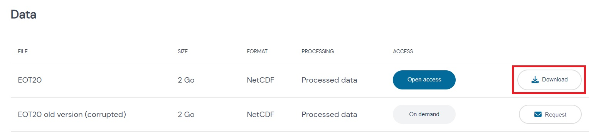
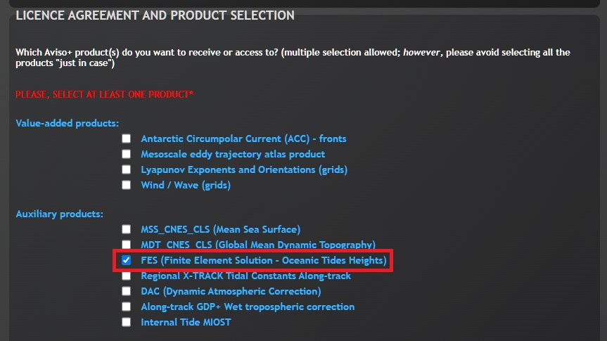
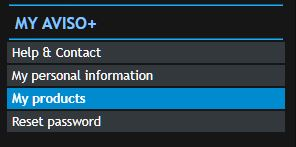
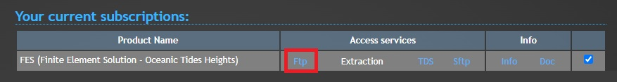
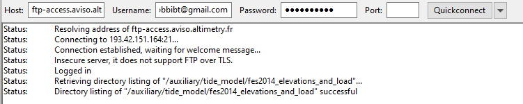
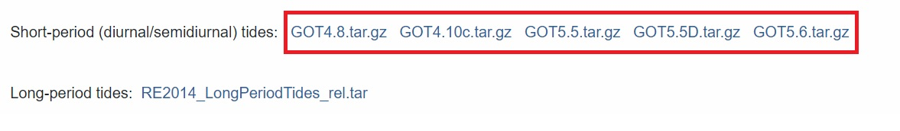
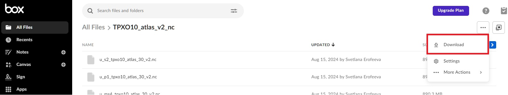
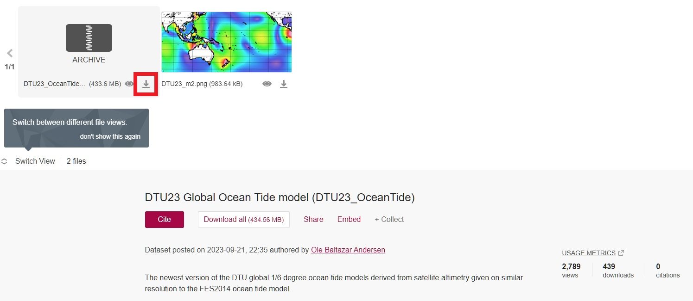
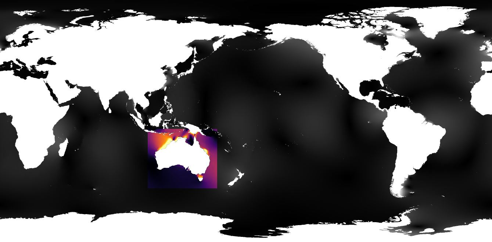

Setting up tide models¶
Important
eo-tides provides tools for modelling tides using global ocean tide models but does not host or maintain the model data itself. Users are responsible for accessing, using, and citing ocean tide model data in compliance with each model's licensing terms.
Once you have installed eo-tides, we need to download and set up the external global ocean tide model data required for eo-tides to work.
The following documentation provides instructions for getting started with several common global ocean tide models.
Tip
Please refer to the pyTMD documentation for additional instructions covering all other supported tide models.
Tide model files and harmonic tidal constituents¶
Tides are driven by complex gravitational interactions between the Earth, moon, and sun, which create periodic and predictable variations in sea level. These variations can be decomposed into a set of harmonic tidal constituents (also known as "tidal constants") with unique amplitudes and phases that correspond to different celestial influences.
When downloading tide model data, you are retrieving these tidal constituents rather than direct modelled or measured tidal height outputs. Global ocean tide models use amplitudes and phases from these tidal constituents to precisely reconstruct tidal variations, allowing them to predict tide heights for any location on the planet and any moment in time — even into the future.
Tip
For a deep dive into the science of tide modelling and how harmonic tidal constituents are used by global ocean tide models, refer to pyTMD Ocean and Load Tides documentation.
Setting up a tide model directory¶
As a first step, we need to create a directory that will contain our tide model data.
This directory will be accessed by all eo-tides functions.
For example, we might want to store our tide model data in a directory called tide_models/:
tide_models/D:/projects/tide_models//home/user/projects/tide_models/Tip
This directory doesn't need to be called tide_models; use any name and/or location that is convenient to you and accessible from your Python environment. Please refer to the documentation below for further details on configuring eo-tides to use this directory.
Downloading tide model data¶
Now we need to download some data from one or more models, and save this into our tide model directory. Follow the guides below for some of the most commonly used global ocean tide models:
EOT20 Empirical Ocean Tide model (default)
EOT20 Empirical Ocean Tide model (default)¶
- Visit EOT20 - A global Empirical Ocean Tide model from multi-mission satellite altimetry
-
Under
Data, clickDownload:
-
Create a new directory inside your tide model directory called
EOT20/to store the EOT20 model files. -
Extract the
85762.zipand thenocean_tides.zipinto this new directory.
You should end up with the following directory structure containing the extracted NetCDF files:
FES2022 Finite Element Solution tide models
FES2022 Finite Element Solution tide models¶
-
Register with AVISO+, and select
FES (Finite Element Solution - Oceanic Tides Heights)from theLicence Agreement and product selectionsection:
-
Scroll to the bottom of the page and agree to the licence agreement. Your request will be sent for approval (this may take several days).
- Once you are notified via email that your registration and access is approved, login to MY AVISO+.
-
Once logged in, select My products in the left-hand menu:

-
FES (Finite Element Solution - Oceanic Tides Heights)should appear underYour current subscriptions.Right click onFtp, and copy the FTP address.
-
Using an FTP client like FileZilla, log in to the FTP using your AVISO+ username and password:

-
Navigate to
/auxiliary/tide_model/, and download the contents of one of the following FTP directory:fes2022b/ocean_tide_20241025/(if using standard model data)fes2022b/ocean_tide_extrapolated/(if using extrapolated model data)
Tip
The "extrapolated" version of FES models have been extended inland using a simple "nearest" extrapolation method to ensure data coverage across the entire coastal zone. This can be useful for ensuring you always return a modelled tide, but can also introduce uncertainty into your modelling (particularly in complex regions such as narrow peninsulas or inlets/embayments).
-
Create a new nested folder inside your tide model directory called either
fes2022b/ocean_tide_20241025/(if using standard model data) orfes2022b/ocean_tide_extrapolated/(if using extrapolated model data) to store your downloaded files. -
Copy your downloaded files into your new tide model directory folder, then uncompress each compressed
*.nc.xzfile (e.g.xz -dk *.nc.xz).
You should end up with the following directory structure containing uncompressed .nc-format NetCDF files:
FES2014 Finite Element Solution tide models
FES2014 Finite Element Solution tide models¶
-
Register with AVISO+, and select
FES (Finite Element Solution - Oceanic Tides Heights)from theLicence Agreement and product selectionsection: -
Scroll to the bottom of the page and agree to the licence agreement. Your request will be sent for approval (this may take several days).
- Once you are notified via email that your registration and access is approved, login to MY AVISO+.
-
Once logged in, select My products in the left-hand menu:
-
FES (Finite Element Solution - Oceanic Tides Heights)should appear underYour current subscriptions.Right click onFtp, and copy the FTP address. -
Using an FTP client like FileZilla, log in to the FTP using your AVISO+ username and password:
-
Navigate to
/auxiliary/tide_model/, and download the contents of one or more of the following directories:fes2014_elevations_and_load/fes2014b_elevations/fes2014_elevations_and_load/fes2014b_elevations_extrapolated/
Tip
The "extrapolated" version of FES have been extended inland using a simple "nearest" extrapolation method to ensure data coverage across the entire coastal zone. This can be useful for ensuring you always return a modelled tide, but can also introduce uncertainty into your modelling (particularly in complex regions such as narrow peninsulas or inlets/embayments).
-
Create a new directory inside your tide model directory called
fes2014/to store the FES2014 model files. -
Extract
ocean_tide.tar.xzorocean_tide_extrapolated.tar.xzinto this directory (e.g.tar -xf ocean_tide.tar.xz).
You should end up with the following directory structure containing the extracted NetCDF files:
Or:GOT Global Ocean Tide models
GOT Global Ocean Tide models¶
- Visit Ocean tide models
-
Under
Short-period (diurnal/semidiurnal) tides, click choose your desired GOT model:
-
Create a new directory inside your tide model directory called either
GOT4.7/,got4.8/,GOT4.10c/,GOT5.5/orGOT5.6/to store the GOT model files. -
Extract your downloaded
.tar.gzfile into this new directory.
You should end up with the following directory structure containing the extracted NetCDF files:
Or:Important
Note that GOT5.6 requires that both GOT5.6 and GOT5.5 model files are downloaded and extracted.
Or:
Or: Or:TPXO Global Tidal Models
TPXO Global Tidal Models¶
- Visit TPXO Registration
- Follow instructions to email TPXO authors for access, providing your name, institution, your intended application/use case, and which TPXO models you need ("TPXO10-atlas-v2 netcdf" or "TPXO9-atlas-v5 netcdf" are recommended to enable clipping).
-
If your request is approved, you will be emailed an invite to an app.box.com folder. Open this link, then click "Download" on the top-right to download your zipped model files.

-
Create a new directory inside your tide model directory called either
TPXO10_atlas_v2/orTPXO9_atlas_v5/to store the TPXO model files. -
Extract your zipped model files (e.g.
TPXO10_atlas_v2_nc.ziporTPXO9_atlas_v5_nc.zip) into this new directory.
You should end up with the following directory structure containing the extracted NetCDF files, depending on the model you downloaded:
Or:DTU Technical University of Denmark tide models
DTU Technical University of Denmark tide models¶
- Visit DTU23 Global Ocean Tide model (DTU23_OceanTide)
- Download
DTU23_OceanTide.zip

- Create a new directory inside your tide model directory called
DTU23_OceanTideto store the DTU23 model files. - Extract your zipped model files (e.g.
DTU23_OceanTide.zip) into this new directory. - Uncompress all compressed
*.d.gzformat files inside theDTU23folder (e.g.gunzip -dk *.gzfrom a terminal).
You should end up with the following directory structure containing uncompressed .d-format files:
Tip
To allow you to improve tide modelling performance by clipping your tide model files (see below), we recommend downloading NetCDF-format versions of tide models wherever possible.
Verifying available and supported models¶
You can check what tide models have been correctly set up for use by eo-tides using eo_tides.utils.list_models.
The list_models function (like all main functions from eo-tides) requires you to specify either the relative or full/absolute path to your tide model directory using the directory parameter:
from eo_tides.utils import list_models
available_models, supported_models = list_models(
directory="tide_models/"
)
Running list_models will print out a useful summary table, with supported tide models listed under "Model", and the expected path to their data within your tide model directory listed under "Expected path".
Models that are correctly set up and available are marked with a ✅, while unavailable (or incorrectly configured) models are marked with a ❌:
──────────────────────────────────────────────────────────
🌊 | Model | Expected path
──────────────────────────────────────────────────────────
✅ │ EOT20 │ tide_models/EOT20/ocean_tides
❌ │ FES2014 │ tide_models/fes2014/ocean_tide
✅ │ HAMTIDE11 │ tide_models/hamtide
❌ │ TPXO9.1 │ tide_models/TPXO9.1/DATA
... ... ...
──────────────────────────────────────────────────────────
Summary:
Available models: 2/50
from eo_tides.utils import list_models
available_models, supported_models = list_models(
directory="D:/projects/tide_models/"
)
Running list_models will print out a useful summary table, with supported tide models listed under "Model", and the expected path to their data within your tide model directory listed under "Expected path".
Models that are correctly set up and available are marked with a ✅, while unavailable (or incorrectly configured) models are marked with a ❌:
──────────────────────────────────────────────────────────
🌊 | Model | Expected path
──────────────────────────────────────────────────────────
✅ │ EOT20 │ D:/projects/tide_models/EOT20/ocean_tides
❌ │ FES2014 │ D:/projects/tide_models/fes2014/ocean_tide
✅ │ HAMTIDE11 │ D:/projects/tide_models/hamtide
❌ │ TPXO9.1 │ D:/projects/tide_models/TPXO9.1/DATA
... ... ...
──────────────────────────────────────────────────────────
Summary:
Available models: 2/50
from eo_tides.utils import list_models
available_models, supported_models = list_models(
directory="/home/user/projects/tide_models/"
)
Running list_models will print out a useful summary table, with supported tide models listed under "Model", and the expected path to their data within your tide model directory listed under "Expected path".
Models that are correctly set up and available are marked with a ✅, while unavailable (or incorrectly configured) models are marked with a ❌:
──────────────────────────────────────────────────────────
🌊 | Model | Expected path
──────────────────────────────────────────────────────────
✅ │ EOT20 │ /home/user/projects/tide_models/EOT20/ocean_tides
❌ │ FES2014 │ /home/user/projects/tide_models/fes2014/ocean_tide
✅ │ HAMTIDE11 │ /home/user/projects/tide_models/hamtide
❌ │ TPXO9.1 │ /home/user/projects/tide_models/TPXO9.1/DATA
... ... ...
──────────────────────────────────────────────────────────
Summary:
Available models: 2/50
Tip
If your downloaded models are marked as unavailable (❌), check that their data was correctly saved to the location specified in the "Expected path" column of the summary table.
Any tide model marked with a ✅ is now ready for tide modelling.
For example, we could use the eo_tides.model.model_tides function, once again passing in the relative or absolute path to our tide model directory using the directory parameter.
You can also specify a tide model to use with the model parameter.
Model names should match the names given in the "Model" column of the list_models table above (by default, "EOT20" is used).
Advanced: Setting tide model directory via the EO_TIDES_TIDE_MODELS environmental variable
Advanced: Setting tide model directory via the EO_TIDES_TIDE_MODELS environmental variable¶
For more advanced usage, you can also set the path to your tide model directory by setting the EO_TIDES_TIDE_MODELS environment variable, avoiding the need to manually set the directory function parameter.
This should be set to a full/absolute path to ensure it can be accessed from anywhere you run eo-tides code:
All tide modelling functions from eo-tides will check for the presence of the EO_TIDES_TIDE_MODELS environment variable, and use it as the default directory path if available (the EO_TIDES_TIDE_MODELS environment variable will be overuled by the directory parameter if provided).
Tip
Setting the EO_TIDES_TIDE_MODELS environment variable can be useful when the location of your tide model directory might change between different environments, and you want to avoid hard-coding a single location via the directory parameter.
Clipping model files to improve performance¶
Highly recommended
Clipping your model files to a smaller spatial extent is highly recommended, unless you are specifically running global-scale analyses.
Running tide modelling on the default tide modelling data provided by external providers can be slow due to the large size of these files (especially for high-resolution models like FES2022). To improve performance, it can be extremely useful to clip your model files to a smaller region of interest (e.g. the extents of your country or coastal region). This can greatly improve run-times: potentially speeding up your tide modelling by over 10 times for large models!
Once you have downloaded and verified your tide model data, you can use the eo_tides.utils.clip_models function to automatically clip your data, and export them to a new tide modelling directory:
from eo_tides.utils import clip_models
clip_models(
input_directory="tide_models/",
output_directory="tide_models_clipped/",
bbox=(113.3, -43.6, 153.6, -10.7),
)
When you run clip_models, the function will automatically identify suitable NetCDF-format models in your input directory, and clip each of them to the extent of your bounding box (specified as (left, bottom, right, top) in EPSG:4326 degree coordinates).
After each model is clipped, the result is exported to your selected output directory and verified to ensure the clipped data is suitable for tide modelling:
Preparing to clip suitable NetCDF models: ['HAMTIDE11', 'EOT20']
Clipping HAMTIDE11: 100%|██████████| 9/9 [00:03<00:00, 2.60it/s]
✅ Clipped model exported and verified
Clipping EOT20: 100%|██████████| 17/17 [00:07<00:00, 2.36it/s]
✅ Clipped model exported and verified
Outputs exported to tide_models_clipped/
You can now pass this new clipped tide model directory to all future eo_tides function calls for improved tide modelling performance, e.g.:
import pandas as pd
from eo_tides.model import model_tides
model_tides(
x=155,
y=-35,
time=pd.date_range("2022-01-01", "2022-01-04", freq="1D"),
model="EOT20",
directory="tide_models_clipped/"
)
Example of tide model data for the M2 tidal constituent from
EOT20clipped to Australia:

Tip
Because only NetCDF-format tide models can be clipped, we recommend downloading NetCDF versions of your tide models wherever possible.
Next steps¶
Now that you have installed eo-tides and set up some tide models, you can learn how to use eo-tides for modelling tides and analysing satellite data!